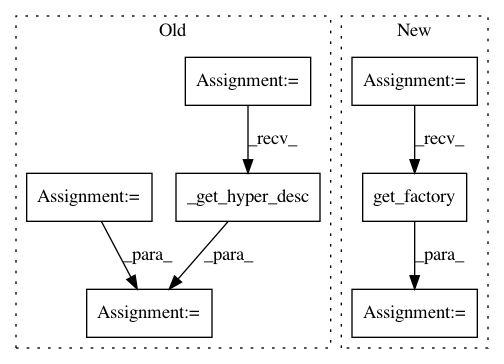

d49517ea811248bc944e566ae8296e13302ce0d0,secuml/exp/active_learning/queries/categories.py,Categories,get_naive_bayes_conf,#Categories#,44
Before Change
hyperparam_conf = HyperparamConf.get_default(
optim_conf.num_folds, optim_conf.n_jobs,
multiclass,
GaussianNaiveBayesConf._get_hyper_desc(),
self.exp.logger)
naive_bayes_conf = GaussianNaiveBayesConf(multiclass, hyperparam_conf,
self.exp.logger)
test_conf = UnlabeledLabeledConf(self.exp.logger, None)
classification_conf = ClassificationConf(naive_bayes_conf, test_conf,
self.exp.logger)
exp_conf = DiademConf(self.exp.exp_conf.secuml_conf,
After Change
classifier_conf = self.exp.exp_conf.core_conf.classifier_conf
optim_conf = classifier_conf.hyperparam_conf.optim_conf
multiclass = True
factory = classifiers.get_factory()
naive_bayes_conf = factory.get_default("GaussianNaiveBayes",
optim_conf.num_folds,
optim_conf.n_jobs, multiclass,
self.exp.logger)
In pattern: SUPERPATTERN
Frequency: 4
Non-data size: 7
Instances
Project Name: ANSSI-FR/SecuML
Commit Name: d49517ea811248bc944e566ae8296e13302ce0d0
Time: 2019-04-25
Author: anael.beaugnon@ssi.gouv.fr
File Name: secuml/exp/active_learning/queries/categories.py
Class Name: Categories
Method Name: get_naive_bayes_conf
Project Name: ANSSI-FR/SecuML
Commit Name: d49517ea811248bc944e566ae8296e13302ce0d0
Time: 2019-04-25
Author: anael.beaugnon@ssi.gouv.fr
File Name: secuml/exp/active_learning/queries/aladin.py
Class Name: AladinQueries
Method Name: _create_naive_bayes_conf
Project Name: ANSSI-FR/SecuML
Commit Name: d49517ea811248bc944e566ae8296e13302ce0d0
Time: 2019-04-25
Author: anael.beaugnon@ssi.gouv.fr
File Name: secuml/core/active_learning/conf/strategies/ilab.py
Class Name:
Method Name: _rcd_conf
Project Name: ANSSI-FR/SecuML
Commit Name: d49517ea811248bc944e566ae8296e13302ce0d0
Time: 2019-04-25
Author: anael.beaugnon@ssi.gouv.fr
File Name: secuml/core/active_learning/conf/strategies/aladin.py
Class Name: AladinConf
Method Name: _get_lr_conf